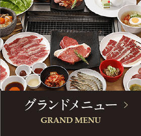
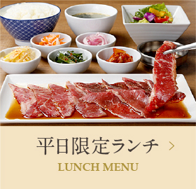
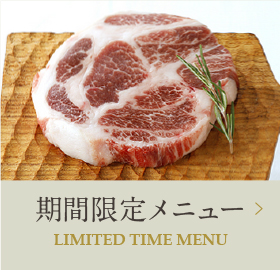
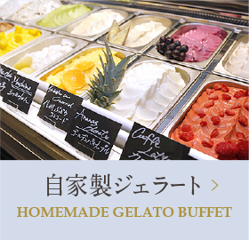
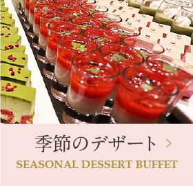
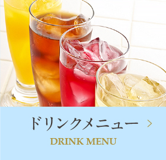
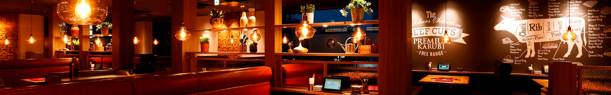
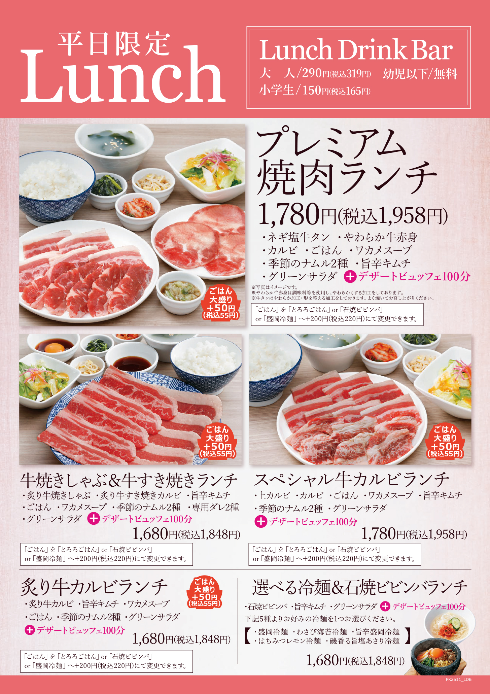
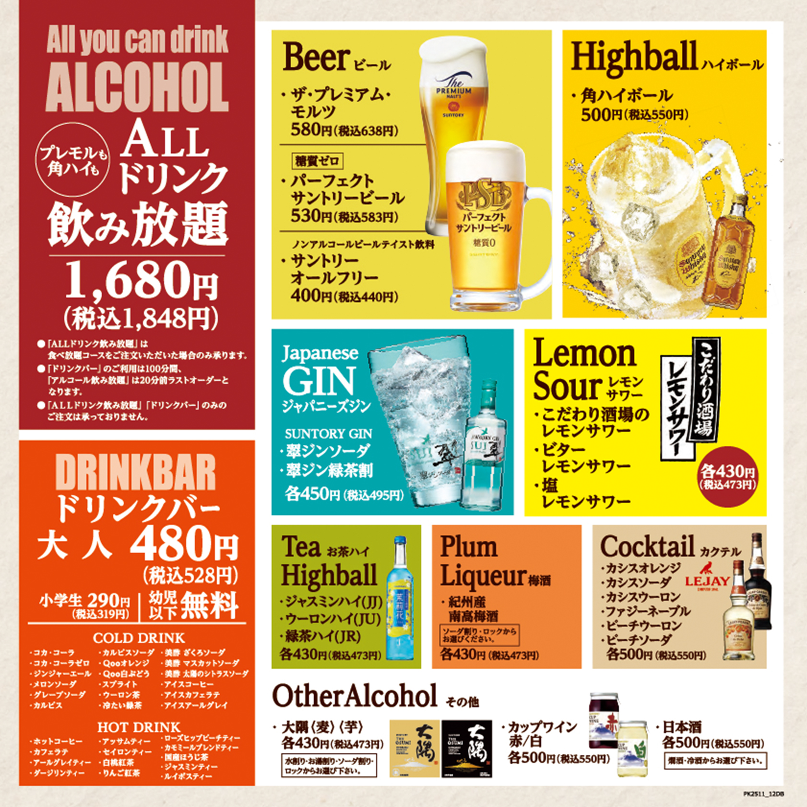

Infos pratiques / Restaurants / Tokyo / Premium Karubi
Premium Karubi - Shinkoiwa
Grande adresse de yakiniku à volonté côté Edogawa, pratique si vous voulez viande grillée, desserts et un format simple pour un groupe.
Galerie photos









Résumé
Premium Karubi est une option très lisible pour un repas viande + desserts sans se compliquer la vie, avec horaires larges et fonctionnement chaîne bien rodé.
Infos clés
- Nom : Premium Karubi Shinkoiwa
- Adresse : 3-40-11 Matsushima, Edogawa-ku, Tokyo 132-0031, Japon
- Téléphone : 03-5879-9829
- Accès : env. 15 min à pied depuis Shinkoiwa Station ; env. 4 min depuis l'arrêt Edogawa Koko-mae
- Horaires observés : lun-ven 11:30 - 23:45 ; sam-dim et jours fériés 11:00 - 23:45
- Style : yakiniku à volonté, desserts, format famille, groupe
- Réservation : aucune page officielle claire confirmée dans les sources consultées
Pourquoi on le met au programme
- Format simple pour un groupe qui veut viande grillée et desserts au même endroit.
- Horaires larges pour un déjeuner tardif ou un dîner sans stress.
- Bonne option si vous voulez un repas plus gourmand qu'une petite adresse de passage.
Prix (JPY / EUR)
- Repère Tabelog déjeuner : 1,000 - 1,999 JPY ≈ 5.44 - 10.88 EUR
- Repère Tabelog dîner : 3,000 - 3,999 JPY ≈ 16.33 - 21.77 EUR
- Lecture pratique : le total varie selon la formule à volonté choisie
Conversion indicative sur base 1 EUR = 183.67 JPY (BCE, 10/03/2026).
Conseils famille (5 personnes)
- Gardez cette adresse pour une grosse envie de viande plutôt qu'un repas rapide.
- Visez un horaire hors pic si vous voulez moins d'attente.
- Comme le lieu est moins central, gardez le lien Maps prêt sur tous les téléphones.